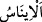
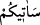
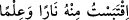
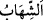
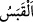
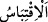
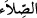
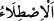
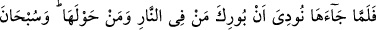
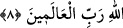

“Hani Mûsâ, âilesine şöyle demişti:” İnsanın ehli/âilesi, kendi özel çevresidir. Yâni
ey Muhammed, kavmine Mûsâ’nın Tuvâ vâdisinde zevcesine ve beraberindekilere şöyle
dediği vakti zikret.
Mûsâ (a.s.) Medyen’de Şuayb (a.s.)’ın yanında yirmi sene kaldı. Sonra Şuayb (a.s.)’ın
kızı olan âilesi ile Mısır’a doğru yola çıktı. Yâni maksadı kendi annesini, birisi
Kârûn’un eşi diğeri Yûşâ bin Nûn’un eşi olan iki kız kardeşini oradan getirmekti.
Yolculuk esnasında karanlık ve pek soğuk bir gecede yolunu şaşırdı. Âilesini de doğum
sancısı tutmuştu. Çakmağını taşa vurdu; ancak çakmak çakmadı. Derken Tûr tarafından
ona bir ateş göründü. Âilesine: “Siz burada durun.
“Gerçekten ben bir ateş gördüm.”
et-Tâc’da der ki: “
” görmek demektir. Bu fiilin bâbı bir şeyin ortaya çıkmasına
ve yabaniliğe ters olan her şeye delâlet eder.
Mukâtil: “Ateş, nûrdur.” der. Bu, Mûsâ (a.s.)’ın Cuma gecesi arz-ı mukaddeste dağın
sağ tarafında gördüğü izzet sâhibi Rabbi’n nûrudur. Nûrun nâr/ateş şeklinde tecellî
etmesinin sırrı Tâhâ sûresinde geçmişti.
“(Gidip) size oradan” yolun nerede olduğuna dâir “bir haber getireceğim,”
“
”ün sîn’i mesâfenin uzaklığına veya yavaş da olsa getirme sözünü mutlaka
yerine getireceğine delâlet etmek içindir. Bu (ikinci) durumda te’kid için olur.
“yahut” orada bana yol gösterecek birini bulumazsam “bir ateş parçası” ateşin
çoğundan veya kaynağından alınmış bir ateş şûlesi “getireceğim,” Hemencecik o ateşin
yanından bir haber getireyim. Yâni o ateşin başında olan kimseden yolu sorayım.
Kulunda iki mahrûmiyeti toplamamak Allah’ın âdetindendir.
“
” denir ki ondan ateş veya ilim aldım/istifâde ettim demektir.
el-Müfredât’ta der ki: “
” tutuşturulmuş ateşin yükselen/parlayan alevi demektir.
“
” alevden alınan ateş/kor demektir. “
” ise onu taleb etmektir. Sonra mecâzen
ilim ve hidâyet talebi için de kullanılmıştır.”
Eğer “Tâhâ sûresinde umma/ihtimal ifâdesiyle “Belki size ondan bir parça kor
getiririm.” (Tâhâ, 20/10) dedi. Burada ise haber vererek ve kesinlik bildirerek
“getireceğim” dedi. O halde bu iki ifâde arasında çatışma var.” dersen, şöyle cevap
veririm: Çatışma yok. Çünkü bir kimsenin bir konuda ümidi kuvvetlenince, aksinin de
olmasını mümkün görmekle birlikte “Şöyle yapacağım” der.
“Umarım ki ısınırsınız!” ateşin harâreti ile soğuğu giderirsiniz.
“
” büyük ateş. “
” ateşle ısınmaktır.